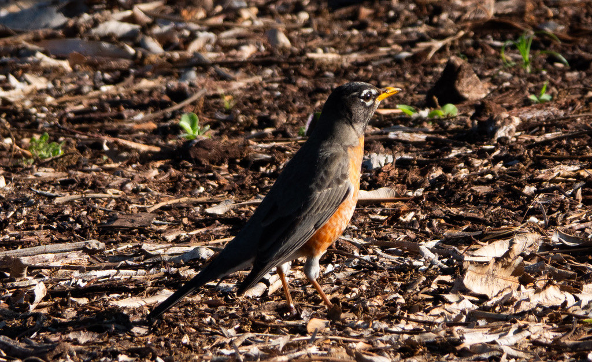

Turdus migratorius
Turdidae
📷 Photo by Rob Carr · CC-BY-NC · via iNaturalist · 📅 Mar 22, 2025
Quick Hits
- The American robin — brick-red breast, dark back, yellow bill — is one of the most recognized birds in North America, but in Florida it is a winter visitor, not a year-round neighbor.
- It arrives in large flocks in fall, feeding on berries and worms across lawns and open ground, then heads north to breed.
- Despite its name, it is not closely related to the European robin — early colonists just thought the red breast looked familiar.
- A robin on a Florida lawn in January is on vacation; by April it is usually back up north nesting.
How to Spot It
Breast
Warm brick-red to orange.
Back
Dark gray-brown.
Bill
Yellow.
Behavior
Runs across lawns, pauses, tilts head, then pulls up a worm.
Voice
A rich, caroling song ('cheerily, cheer-up, cheerio') — but mostly heard on the breeding grounds, not in Florida.
What to Look For
A plump, upright bird with a red breast hopping across a lawn. In Florida, a winter visitor in flocks.
What It Eats
Earthworms and insects (summer); berries and fruit (winter).
Where & When
Where in the park
Open lawns and under fruiting trees in winter.
When to see it
Winter visitor — typically November through March.
Watching It Respectfully
Observe and enjoy.
Photo Gallery
Photos contributed by park visitors and volunteers via iNaturalist

📷 Rob Carr
📅 Mar 22, 2025
Photo Credits
- © Rob Carr (CC-BY-NC), via iNaturalist